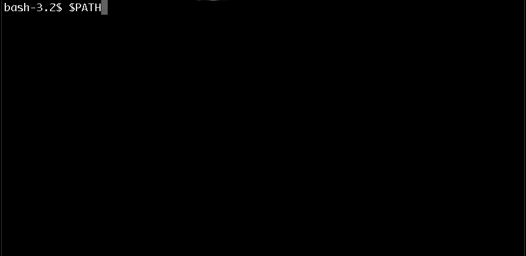
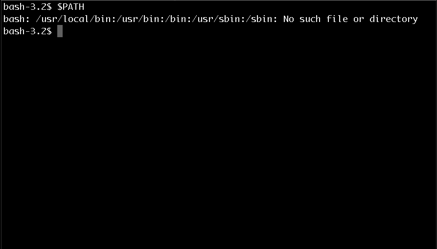

verifying Installation
Now it's important to make sure it installed correctly or you'll have a hard time working with it.
1) Open your command line window and load your favorite shell. I prefer type
bashYour shell should look something like this:
2) Then you will want to type:
$PATHYour shell should look something like this:

3) This is the final and most important step! Make sure your PATH is set to:
usr/local/binYour shell should return something like this:

If there was an Issue
Please follow this link to research what went wrong. Trouble shooting the installation issues is beyond the scope of this tutorial.
Now onto the fun stuff!
Lets code Hello World! Click Here